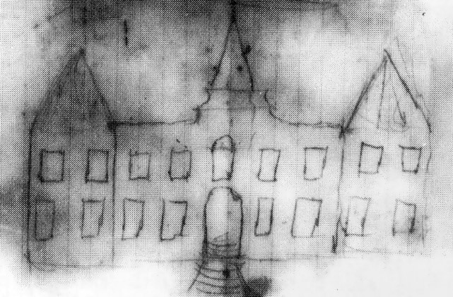

Desenho entregue por Oswaldo Cruz ao arquiteto português Luis Moraes Júnior no início do século 20 (1905) para
o futuro Instituto Soroterápico Federal (Acervo: COC)
1904 – Entra em vigor o Novo Código Sanitário no Brasil reformulado por Oswaldo Cruz, com a restauração da
obrigatoriedade da vacinação antivariólica.
Medida com dura crítica pela sociedade o que ocasionou a Revolta da Vacina e, consequentemente, a revogação
da obrigatoriedade.
1905/1906 – Início da construção do Castelo Mourisco no Instituto Soroterápico Federal.